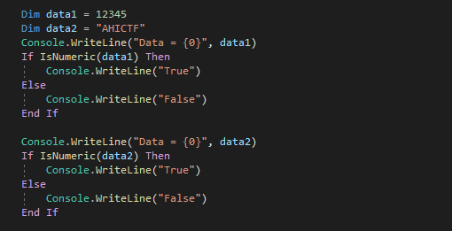
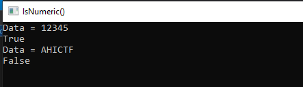
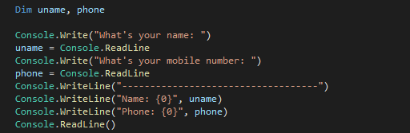
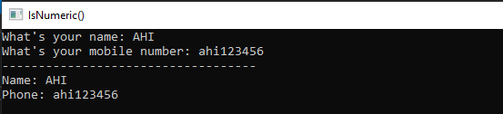
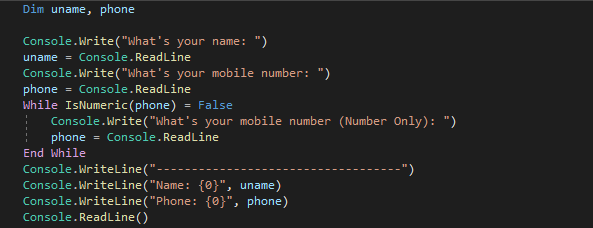
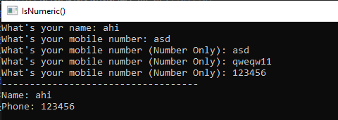

AHI CTF

#Code4Sec #IsNumeric #VB.NET CSRF Protection
การใช้งานฟังก์ชัน IsNumeric() ในภาษา VB.NET
IsNumeric()
IsNumeric() เป็นฟังก์ชันที่มีไว้สำหรับตรวจสอบว่าค่าเป็นค่าตัวเลขหรือไม่
ตัวอย่างการใช้งานในภาษา VB.NET
ผลลัพธ์ที่ได้คือ
จะสังเกตเห็นได้ว่าฟังก์ชัน bin2hex() มีการตรวจสอบข้อมูลว่าเป็นตัวเลขจริงหรือไม่
การใช้งานฟังก์ชัน IsNumeric() เพื่อตรวจสอบความถูกต้องของหมายเลขมือถือ
จากโค้ดด้านล่างเป็นโปรแกรมเกี่ยวกับการรับข้อมูลชื่อ และเบอร์มือถือที่ผู้ใช้งานกรอกมาแสดง
ผลลัพธ์ที่ได้คือ
จะเห็นว่าไม่มีการตรวจสอบรูปแบบของข้อมูลมือถือให้เป็นเพียงตัวเลขเท่านั้น โดยวิธีการแก้ไขเราจะใช้ฟังก์ชัน IsNumeric() เข้ามาช่วย
จากโค้ดด้านบนจะเห็นว่ามีการเพิ่มคำสั่ง IsNumeric() เข้าไปตรวจสอบหมายเลขมือถือ ผลลัพธ์ที่ได้คือ
